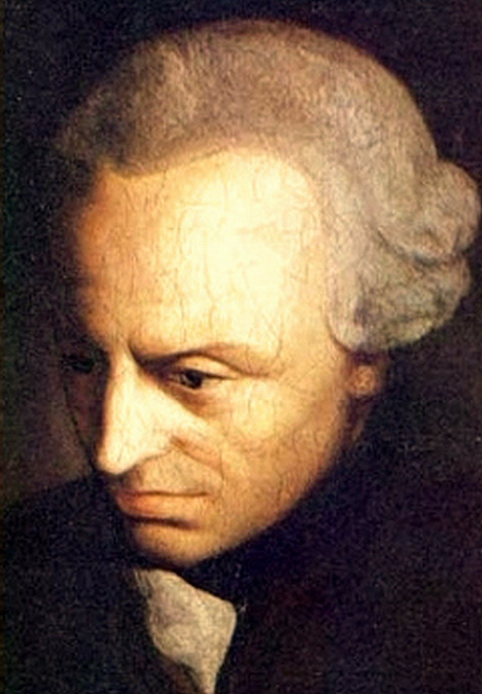

Every kid hears the same question, usually right after doing something small and selfish. You cut the line, you lie to duck a chore, and some adult says: what if everyone did that? It is meant to shut the argument down, not open one. Immanuel Kant spent his life deciding it was the whole of right and wrong.
Take that question, make it exact, and point it at every single thing you do, and you have the categorical imperative, Kant's one rule. He thought all of morality could be built on it, the way Euclid built a world of geometry out of a handful of axioms. Not a list of commandments, not a holy book, not a gut feeling. One test, run by reason, that any person anywhere could run for themselves and get the same answer.
What makes Kant Kant is where he refuses to look. Not at what your action produces, whether it makes anyone happy, including you. Not at how it feels, whether you did it out of love or spite. He throws all of that out and stares at one thing: the rule you were secretly acting on, and whether you could stand for everyone else to act on it too. Morality, for him, is not about results, and it is not about feelings. It is about whether your reasons could be everybody's reasons.
The book is the Groundwork of the Metaphysics of Morals, published in 1785, by a man who was already, on the strength of his Critique of Pure Reason, the most argued-over philosopher in Europe. It is short, under a hundred pages, and it is a genuine slog, some of the hardest clear writing in philosophy, because Kant is not just stating his rule, he is trying to prove it, chasing it down to the last bolt. This page walks the argument in seven stops, from its first move to its last, and ends where the argument itself cracks, because it does crack, in a few famous places.

The featured translation throughout is Thomas Kingsmill Abbott's, from 1873, long in the public domain, so every passage is quoted in full instead of in snippets. It reads old, all "thou canst" and "whereby," and I have kept it that way and set the modern wording right beside it on the one line everybody quotes, so you can watch a hundred and twenty years of English move across the same sentence.
Stop 1 / First Section, the good will
The one thing that is good no matter what
Abbott / First Section
Nothing can possibly be conceived in the world, or even out of it, which can be called good, without qualification, except a good will.
Even if it should happen that ... this will should wholly lack power to accomplish its purpose, if with its greatest efforts it should yet achieve nothing, and there should remain only the good will ... then, like a jewel, it would still shine by its own light, as a thing which has its whole value in itself.
Groundwork, First Section (Ak. 4:393)Kant opens with a claim that sounds enormous and is: there is exactly one thing in the world that is good with no conditions attached, and it is a good will. Every other good thing is only good on a condition, and he walks you through them to prove it.
Start with the traits everyone envies. Intelligence, nerve, cool judgment, patience. All good, Kant grants, then he pulls the floor out: they are only good if the will using them is good. A sharp mind and steady nerve are precisely what make a con artist worse than a clumsy one, and "the coolness of a villain," he writes, makes him "more abominable in our eyes than he would have been without it." Hand a bad will a set of good tools and you have made the world worse, not better. Same with the gifts of luck: money, power, health, even happiness. A cruel person who is also happy and lucky is not a good in the world, they are an offense.
So the good is not in the talents and not in the winnings. The one thing that stays good in every hand, the saint's and the monster's, the thing that decides whether all the rest tilts toward good or evil, is the quality of the will behind it. A will that wants to do right because it is right.
Then Kant makes the strangest claim of the lot, and the whole book leans on it. A good will is good even if it never accomplishes a thing. Suppose you try your absolute hardest to do right and fail completely, through plain bad luck, so that no good at all comes of it. The good will, Kant says, "would still shine by its own light, as a thing which has its whole value in itself." The results were never the point, because results are luck. A person who tries with everything they have and fails has the same moral worth as the one who succeeds. The world got the good outcome from the second person, but the goodness belonged equally to both.
Stop 2 / First Section, acting from duty
Why the kind thing can be worth nothing
Abbott / First Section
It is always a matter of duty that a dealer should not over charge an inexperienced purchaser; and wherever there is much commerce the prudent tradesman does not overcharge, but keeps a fixed price for everyone ... Accordingly the action was done neither from duty nor from direct inclination, but merely with a selfish view.
Groundwork, First Section (Ak. 4:397)Here Kant makes his most disliked move, and it pays to see why he makes it before deciding he is wrong. An action has real moral worth, he says, only when it is done from duty, because it is right, and not from inclination, because you felt like it or it paid.
The shopkeeper is his example. Picture an honest merchant who never overcharges anyone, not even a child who would never catch the difference. Good behavior, obviously. But if he is honest because a reputation for fair prices is good for business, then, Kant says, he has done the right thing "neither from duty nor from direct inclination, but merely with a selfish view." His honesty happened to line up with what duty demands. It was not done for duty's sake. It was done for the till.
Then the hard case, the one people still argue about. Picture someone who genuinely loves to help, who gets a warm glow from doing people good. Lovely, says Kant, and worth precisely nothing, morally, because they are just indulging a taste, the way someone else likes to garden. Then he turns the screw. Take that same warm person and drown their good cheer in some private grief, until they feel nothing for anybody, and have them drag themselves out of bed to help a stranger anyway, cold, purely because it is the right thing to do. Now, Kant says, and only now, "first has his action its genuine moral worth." The colder it feels, the clearer the duty shows, because at that point nothing else could possibly be moving them.
This lands wrong on almost everyone, and it deserves a fair hearing both ways. Read one way it is a little monstrous, and Kant's own contemporaries said so. The poet Schiller mocked it inside Kant's lifetime, roughly: I am happy to help my friends, but it troubles me that I enjoy it, so I fear I am not virtuous. If the theory really says the warm helper ranks below the grim one gritting their teeth, something has gone wrong.
But read him more carefully and the point is narrower and much better. Kant is not saying feelings are bad, or that you should go cold, or that the cheerful helper is a worse person. He is saying your feelings cannot be the thing your morality rests on, because they come and go and are not yours to command. The friend who is kind only when kindness comes easy will drop you the day it doesn't. The one who is kind from duty is still there on the worst day, when the warm feeling is gone. Kant is hunting for the part of goodness you can actually count on, and a mood is not it.
Stop 3 / Second Section, the one rule
One rule, and every duty falls out of it
Abbott / Second Section
There is therefore but one categorical imperative, namely, this: Act only on that maxim whereby thou canst at the same time will that it should become a universal law.
Groundwork, Second Section (Ak. 4:421)This is the machine at the center of the book. Kant claims every duty you have drops out of a single rule, and here it is: act only on a maxim you could will to be a universal law. Two bits of jargon, both simple. A maxim is just the personal rule you are actually acting on, the real reason, said out loud and honest: "I break a promise whenever keeping it gets expensive." To will it as a universal law is to ask whether you could genuinely want that rule to hold for everyone, always, including on the days it gets used against you.
First the word categorical, because it carries the whole difference. Almost every rule we live by is hypothetical, an if-then: if you want to stay out of jail, don't steal; if you want friends, be kind. Take away the want and the rule falls silent. Kant's imperative has no "if." It does not ask what you want. Do not lie, full stop, not "do not lie if you would like to be trusted." A categorical rule binds you whether it pays or not, and that, for Kant, is the only kind of rule that is genuinely moral rather than merely clever.
Watch the test run on his own example. You are broke, and you are thinking about promising to repay a loan you already know you cannot repay, a flat lie to get the cash. Run the Kant question: could I will that everyone in a tight spot make a promise they intend to break? Try to and it collapses in your hands. If everyone did that, a promise would carry no weight at all, no one would lend on the strength of one, and the very tool you are reaching for, a believed promise, would stop existing. "While I can will the lie," Kant writes, "I can by no means will that lying should be a universal law," because as soon as it "should be made a universal law, [it] would necessarily destroy itself." The lie only works because almost everyone else tells the truth. Make it the universal rule and it eats its own legs.
Notice what this is not. It is not "what goes around comes around." It is not a warning that the liar might get caught. Kant does not care whether the liar gets caught; the getting-caught question is exactly the prudent, hypothetical thinking he is trying to leave behind. The point is colder and cleaner than a threat: the liar's rule cannot even be thought as a rule for everyone without contradicting itself. It fails a logic test, not a luck test. The wrong is baked into the reasoning, and you can see it from your armchair.
The most famous sentence in the book, in three hands
One sentence, the categorical imperative itself, across a hundred and twenty years of English. Nothing in the idea changes. Watch only the surface: the archaic pronouns fall away, "whereby" turns into "through which," and the plain "act on a maxim" grows the careful "act in accordance with a maxim."
Kant gives a second wording on the same page, the "law of nature" version: Act as if the maxim of thy action were to become by thy will a universal law of nature. Same test, dressed as a thought experiment: imagine your rule becoming a law of physics that everyone is simply built to follow, and see whether the world you just made still hangs together.
Stop 4 / Second Section, persons and things
Treat people as ends, never merely as tools
Abbott / Second Section
So act as to treat humanity, whether in thine own person or in that of any other, in every case as an end withal, never as means only.
Groundwork, Second Section (Ak. 4:429)Kant says the one rule can be put a second way, and this is the version that walked out of the book and became the moral backbone of the modern world. Treat every person always as an end, never merely as a means.
Under it is a line between two kinds of thing: persons and things. A thing has a price. It is worth what it does for you, and if you swap it for an equal one you have lost nothing. A person is not like that. People, Kant says, "are called persons, because their very nature points them out as ends in themselves." They are not raw material for your plans. They arrive with plans of their own.
The most important word in the sentence is the smallest one: merely. Kant does not say never use a person as a means, which would be lunacy, you use people as means all day long. The barista, the surgeon, the driver, the stranger you ask for directions, every one of them is a means to something you want, and there is nothing wrong with it. The line is "never merely as a means," never as just a tool, in a way that runs straight past the fact that they are a person with a will and ends of their own. Pay the surgeon, respect her judgment, let her refuse, and you are treating her as a means and an end at once. Drug her, deceive her, force her, and you have crossed the line into merely.
This is why, for Kant, lying and coercion are the two great wrongs, and why they are wrong in the very same way. Both use a person by going around their reason. When you lie to someone to get what you want, you are steering them with false information, working them like a lever they cannot see. When you force them, you skip their yes altogether. Either way another human being has been folded into your plan as a part, not a partner. The clean test underneath it is consent: could the person, if they knew the whole truth of what you are doing, actually go along with it? If not, you are using them merely, and no good outcome buys it back.
Stop 5 / Second Section, the kingdom of ends
What has a price, and what has a dignity
Abbott / Second Section
In the kingdom of ends everything has either value or dignity. Whatever has a value can be replaced by something else which is equivalent; whatever, on the other hand, is above all value, and therefore admits of no equivalent, has a dignity.
Groundwork, Second Section (Ak. 4:434)Now Kant pulls back to the picture the two rules add up to. Imagine a whole community of people, each one acting only on rules that could be laws for everyone, each one treating all the others as ends and never as mere tools. He calls it the kingdom of ends: a group in which every member is at once a maker of the laws and a subject of them, and nobody is anybody's mere instrument. He is honest that no such place exists. "It is certainly only an ideal." It is the target you aim at, the way a physicist aims at a frictionless surface knowing the real floor always drags.
Out of that picture comes his most quoted contrast, and the single word most worth stealing from him: dignity. Everything, Kant says, has either a price or a dignity. If a thing has a price, something else can stand in for it, because it is worth only what it trades for. Money has a price. Skills have a price: "skill and diligence in labour have a market value." A dignity is a different kind of thing entirely, not a bigger price but no price at all. It is "above all value," which is Kant's careful way of saying it has no equivalent, that there is nothing you could swap in for it with nothing lost.
People, he says, have a dignity. That is the claim, and it is doing colossal, invisible work under the floor of the modern world. It is why you cannot buy a person. It is why "everyone has their price" is an insult and not an observation. It is what we actually mean when we call a human life priceless, which is not that it is worth an infinite pile of money but that it does not belong on the money scale at all. Put a person on one pan of a scale and a sum of money on the other and you have already made a category mistake, because one of those two things does not go on scales.
Stop 6 / Second Section, the will that makes the law
Freedom is obeying a law you wrote yourself
Abbott / Second Section
Autonomy of the will is that property of it by which it is a law to itself.
Autonomy then is the basis of the dignity of human and of every rational nature.
Groundwork, Second Section (Ak. 4:440, 4:436)Now the deepest move in the book, and the strangest. Where does the moral law get the authority to bind you so absolutely? Not from God, Kant says. Not from the king, not from your society, not from what you happen to want. It gets its authority from you, from your own reason. You are bound by the moral law because you are the one who wrote it. He calls this autonomy, from the Greek autos and nomos, self and law: a will that is "a law to itself."
The word has gone soft in modern use, where "autonomy" just means doing your own thing, being left alone to follow your preferences. That is nearly the opposite of what Kant meant, and the gap is worth stopping on. For Kant, doing whatever you feel like is not freedom at all. When appetite or fear or habit or craving pushes you into an action, you did not choose it, you were shoved, and a person shoved by their own impulses is no more free than a rock rolling downhill is free. He has a name for that condition too: heteronomy, being ruled from outside, and a hunger is an outside ruler just as much as a tyrant is. The addict is the least free person Kant can imagine, precisely because they are only ever "doing what they want."
So real freedom turns out to be the reverse of what it looks like. You are most free not when you have escaped every rule, but when the rule you are following is one your own reason handed you, instead of one your appetites or your circumstances forced on you. The soldier who bolts is driven by fear; the one who holds the line is, in Kant's sense, the freer of the two, because he is acting on a law he set against the pull of his own terror. Obeying yourself and being free become the same act. That is the quiet payoff of the entire book: the moral law is not a cage lowered onto you from above. It is the one law you give yourself, which is exactly why it can bind you completely without ever making you a slave. "Autonomy," Kant says, "is the basis of the dignity of human and of every rational nature." Your dignity, the thing in you that has no price, just is this: you are the kind of creature that can write its own law and then live by it.
Stop 7 / the objections, kept in
Where it cracks
Abbott / the last line of the book
And thus while we do not comprehend the practical unconditional necessity of the moral imperative, we yet comprehend its incomprehensibility, and this is all that can be fairly demanded of a philosophy which strives to carry its principles up to the very limit of human reason.
Groundwork, Third Section (Ak. 4:463)A rule this clean was always going to hit hard cases, and the honest thing is to walk them, not hide them. Kant met the most famous one head-on and gave the answer most readers think is plainly wrong.
The murderer at the door. A killer turns up asking, straight out, whether your friend is hiding in your house. He is. Can you lie? Every nerve says obviously yes. A French writer, Benjamin Constant, put this to Kant in 1797 expecting him to allow it. Kant, then in his seventies, wrote a whole short essay in reply and said no. You may not lie, even to the murderer at the door. Lying fails the universal-law test, and it does not get a special pass because the stakes are horrifying. Most readers take this as a reductio, a case that proves the theory has gone rigid: a morality that forbids lying to a killer to save an innocent life has lost hold of the thing morality was for.
The empty formula. A generation later Hegel pressed a deeper complaint. The universal-law test, he said, is empty. It tells you to check whether your maxim could be a law for everyone, but it never tells you how to describe your maxim, and the description does all the work. Write your rule as "I break promises whenever it suits me" and it fails. Write the same act as "I break promises on a Tuesday in a leap year when the rent is three days late" and you might will that universal without the sky falling. Feed the machine a clever enough maxim and it will wave almost anything through, or forbid almost anything. Kant's defenders answer that the humanity formula, never treat a person merely as a means, does the real filtering, and it mostly does, which is a quiet admission that the famous first formula cannot stand on its own.
The proof that isn't. This is the technical crack, and the biggest. The Groundwork's whole third section sets out to prove the thing the rest of the book needs: that we really are free, and so really are bound by a moral law our own reason gives us. Without that freedom, the entire structure is a beautiful description of a law nobody is actually standing under. Kant argues for it, and by broad agreement, arguably including his own later, he fails. A few years on he stopped trying to prove freedom and simply called it a "fact of reason" we are entitled to assume. The most rigorous ethics ever built rests, at the very bottom, on a floor its own author could not lay. He all but says so in the book's last line, quoted above: we do not comprehend how the moral law is possible, we only "comprehend its incomprehensibility."
So what survives, and it is most of it. Cut away the parts that overreach and the core is still standing, and you reach for it constantly. The universal-law question is a real test of fairness, the machinery behind "how would you like it if everyone did that" and behind every time you catch someone carving out a private exception for themselves that they would never grant anyone else. And the humanity formula, treat people as ends and never merely as tools, is about as close to bedrock as moral philosophy gets: it is why "dignity" sits in the charters of human rights, why consent is the bright line in medicine and sex and research, why "you're using me" is a wrong everyone feels before they can explain it. Kant wanted to hand that conviction a proof, worked out from nothing, like Euclid. What he actually handed it was a spine.
Two and a half centuries on, after every attempt to run morality purely on outcomes or purely on feelings has hit a wall of its own, Kant's stubborn little rule is still the thing we grab for when we want to say that some things stay wrong even when they pay, and that a person is never merely a step on the way to your goal. That is not nothing. It might be the most anyone has managed.
Where the text comes from
The featured translation throughout is Thomas Kingsmill Abbott's, first published in 1873 as Fundamental Principles of the Metaphysic of Morals and long in the public domain, which is why every passage above is quoted in full rather than in fragments. It is one of the versions English readers have met Kant in for over a century. It runs archaic, and I have left it that way on purpose, then set the modern wording beside it on the sentence where the difference is most fun to watch. Every quotation is verbatim; I pulled the text and checked each line rather than trusting memory, and the ellipses only ever shorten a passage, never stitch two claims into one.
- The featured text is T.K. Abbott's translation (1873), via Project Gutenberg.
- The comparison panel on the categorical imperative sets Abbott beside H.J. Paton (Harper, 1948) and Mary Gregor (Cambridge, 1996), the two standard modern English versions, quoted in a single line each for comparison and named.
- The background leans on the Stanford Encyclopedia of Philosophy entry on Kant's moral philosophy, including its account of the several formulas of the imperative and the long fight over whether they really come to the same thing.
- The murderer-at-the-door exchange is real: Benjamin Constant's 1797 objection, and Kant's reply the same year, the essay usually titled On a Supposed Right to Lie from Philanthropy.
Two honest notes. The line people most often hang on Kant, "the starry heavens above me and the moral law within me," is not from this book at all; it closes the Critique of Practical Reason (1788), and I have kept it out to avoid the mix-up. And the citations in the passage boxes use the standard Academy pagination (Ak. 4), the page numbers of the Prussian Academy edition that every Kant scholar cites, so you can find any line in any edition you own.
The breakdowns are mine. The two modern translations are still in copyright and appear here only in short single-line excerpts, for comparison and study, with each translator named.
The portrait in the opening and on the homepage card is the most reproduced likeness of Kant, an anonymous painting of about 1790 from the school of Anton Graff, in the public domain via Wikimedia Commons. It catches him near the end of the decade that produced the Groundwork, already the most famous philosopher in Europe and, by every account, one of the least dramatic men who ever lived: a lifelong bachelor who took the same walk through Konigsberg at the same hour every afternoon, so regularly that neighbors were said to set their clocks by him. The revolution was all on the page.